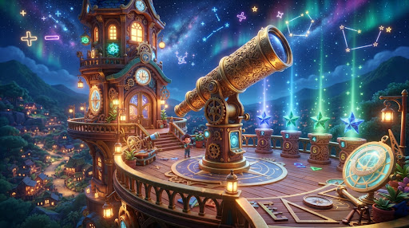

fort
Aras 6 • Puncak Tertinggi
Balai Cerap Teleskop Angkasa
auto_awesome
PUNCAK AGUNG

visibility
Teleskop Kenanga • Aktif
stars
Buruj 1–20 Ditemui
hotel_class
5/5 Kristal Bersinar
smart_toy
psychology
Tok Ketua & Si Rimau
Penjaga Balai
"Tahniah Wira Adam! Kamu berjaya tiba di anjung langit! Teleskop Kenanga memerlukan sambungan Pola Bintang Melompat Lima-lima untuk menyalakan Bintang Kejora Desa!"
KSSR MATEMATIK TAHUN 1
Pola Nombor Menaik
auto_graph Cabaran Pola Buruj: Melompat 5-5
Pilih nombor yang tepat untuk mengisi bintang misteri [ ? ] agar kuasa kristal terpancar!
5
Bintang 1
10
Bintang 2
15
Bintang 3
?
SASARAN!
25
Kejora
lightbulb
Petua Tok Ketua: 5 + 5 = 10, 10 + 5 = 15... Tambah 5 lagi pada 15 untuk dapat jawapan bintang!
explore Modul Cerap Puncak
3 Alat Sedia
travel_explore
Kanta Pembesar Buruj
Peta 1 hingga 100 di angkasa
flare
Pancaran 5 Kristal
Gelombang tenaga ke Taman Desa
panorama
Kampung Wira 360°
Tinjau binaan dari atas awan